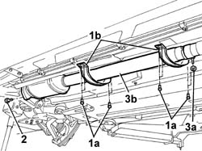

1080B62 CATALYTIC CONVERTER - R.R.
- Path
- Procedures > 10 ENGINE > 1080 EMISSION CONTROL SYSTEM > 1080B EXHAUST EMISSION CONTROL SYSTEM > 1080B62 CATALYTIC CONVERTER - R.R.
- Kind
- repair procedure (removal / refitting; the operation number is the code)
- Applies to
- engines: 2.4 JTD 20V; all production periods
- Interactive page
- https://sloeber94.github.io/elrnDB-lThss/en/#/850794
Applies to: engines: 2.4 JTD 20V; all production periods
 Removing
Removing
 Refitting
Refitting- Position the vehicle on the lift.
See in Op. 7055B54 PROTECTION/GUARD under engine - R.R.
1. Undo the fixing bolts (1a) and remove the reinforcement brackets (1b).
2. Undo the bolts fixing the catalyzer flange to the front section of the exhaust pipe.
3. Tighten the nut (3a) fixing the rear collar and remove the catalytic converter (3b).

Applies to: engines: 2.4 JTD 20V; all production periods
Refitting
Removing- Position the catalyzer securing it to the rear section of the pipe.
- Tighten the nut fixing the rear collar.
 | Value - daNm | Fastening | Component | Ø |
|---|---|---|---|---|
. | 4.5 | Nut | REAR SILENCER EXHAUST | M10 X 1.25 |
- Tighten the bolts fixing the catalyzer flange to the front section to torque.
| Value - daNm | Fastening | Component | Ø |
|---|---|---|---|---|
. | (catalytic converter) 2.8 | Bolts | EXHAUST PIPE TO ENGINE | M8 |
- Position the reinforcement brackets and tighten the fixing bolts.
See in Op. 7055B54 PROTECTION/GUARD under engine - R.R.
- Remove the vehicle from the lift.